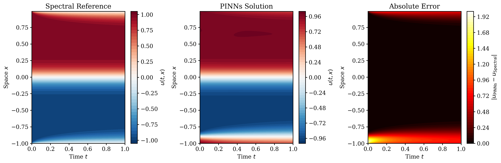
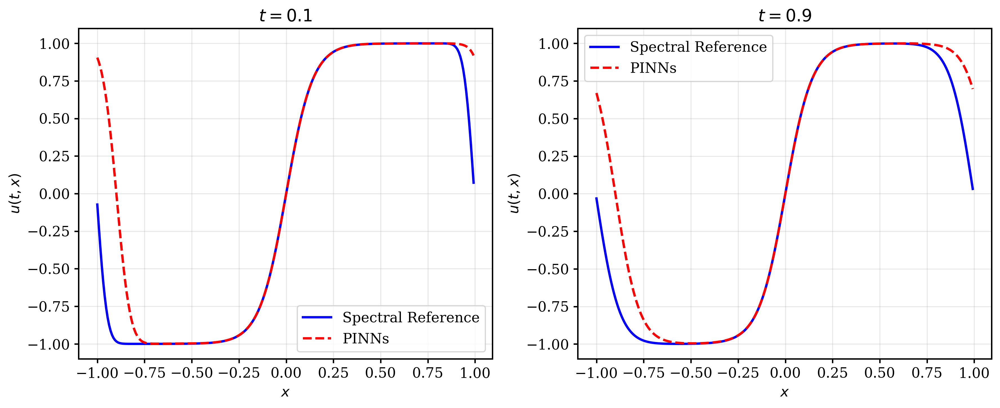

Spectral Baseline for Allen-Cahn
This project builds the classical numerical reference used to evaluate the PINNs solution of the one-dimensional Allen-Cahn equation. The role of the spectral solver is not only to provide a benchmark error table, but also to give a dense and reliable space-time solution that makes it possible to visualize where the neural approximation agrees, where it smooths the interface, and how much absolute error is present over the full domain. In other words, this page is about the evaluation baseline that makes the learning results interpretable.
Main role: generate the benchmark solution stored in Allen_Cahn_spectral_solution.npz, containing the full solution on 256 spatial points and 1001 time levels, for a total of 256,256 space-time samples.
Reference PDE
The reference solution corresponds to the same Allen-Cahn evolution studied in the PINNs experiment:
\[ \frac{\partial u}{\partial t}=\epsilon^2\frac{\partial^2 u}{\partial x^2}+u-u^3, \qquad \epsilon=0.1, \]
with spatial domain \(x\in[-1,1]\), time interval \(t\in[0,1]\), and initial condition
\[ u(0,x)=\tanh\left(\frac{x}{\sqrt{2}\epsilon}\right). \]
In the project writeup, the numerical baseline is generated with a Fourier spectral workflow adapted from the nonlinear Schrodinger notebook. The saved solution is then reused for quantitative and visual comparison against the learned PINNs output.
Numerical Method
The reference solution is produced using a Fourier spectral discretization in space. Spatial derivatives are computed through Fourier differentiation, while the time evolution is advanced on a uniform temporal grid with time step \(\Delta t=10^{-3}\). The resulting dataset contains:
- 256 spatial points on \([-1,1]\)
- 1001 time levels on \([0,1]\)
- 256,256 total space-time evaluation points
This makes the spectral solver a strong baseline for dense error analysis. It is particularly useful because the PINNs solution can be evaluated continuously, while the spectral solver provides a trusted numerical grid on which pointwise differences can be measured directly. That pairing creates a clean benchmark workflow: one model produces fast inference, the other provides the reference target used for measurement.
Modeling Detail and Numerical Caveat
One subtle but important detail in the report is that the spectral implementation is periodic in its Fourier formulation, while the Allen-Cahn setup of interest uses a hyperbolic tangent initial profile that is not exactly periodic at the endpoints \(x=\pm 1\). This mismatch can introduce mild endpoint artifacts or Gibbs-type effects. In the reported experiment, however, the chosen grid and time step still produced a stable and useful benchmark solution for comparison.
That caveat matters because it frames the spectral result correctly: it is a high-quality practical reference, but not a perfect exact solution in the strict boundary-condition sense. For this project, it is accurate enough to expose the strengths and limitations of the PINNs approximation clearly.
Comparison Value
The benchmark solution is used to compare the PINNs output through heatmaps, time slices, and global error metrics. This keeps the comparison quantitative instead of purely visual. The reported comparison gives:
- MAE \(=1.04\times 10^{-1}\)
- RMSE \(=2.70\times 10^{-1}\)
- Reference range \([-1.028, 1.028]\)
- PINNs range \([-1.006, 1.003]\)
These values indicate that the spectral baseline is close enough to the learned solution to confirm correct large-scale dynamics, while still sharp enough to reveal the small smoothing errors introduced by the neural model.

Heatmap comparison of the spectral reference, the PINNs approximation, and the absolute error across the full space-time grid.

Time-slice views at \(t=0.1\) and \(t=0.9\), showing that the spectral solution remains slightly sharper near the transition regions.
Why This Baseline Matters
The spectral solver is the computational anchor of the Allen-Cahn study. It is faster to generate than training the PINNs model, and it supplies a dense numerical reference without the need to learn parameters. That makes it the natural standard against which to judge the neural method. At the same time, the comparison highlights the tradeoff between the two approaches: spectral methods are efficient and accurate for fixed PDE settings, while neural surrogates are valuable once a trained model is needed for repeated evaluation at arbitrary query points.
In that sense, this page is less about a standalone solver and more about the benchmark infrastructure that makes the rest of the comparison credible. Without a careful baseline, the reported neural-solver results would be much harder to interpret, reproduce, or trust.
Back to Projects